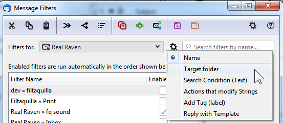

quickFilters 5.5 - WIP
QUICKFILTERS PRO - SUMMER SALE 30% OFFSave 30% on the regular price and support the quickFilters project from Monday, May 30th to June 12th! quickFiltersis now compatible with Thunderbird 102 the official version for 2022 / 2023. To help fund quickFilters for the next year and the unavoidable changes necessary to switch over to an API based approach, you should buy a quickFilters Pro license The conversion work in quickFilters (and my other Add-ons) is still ongoing. I have made great strides in converting the options dialog of the sibling Add-on QuickFolders to standard html and will use the gained knowlegde to convert quickFilters as well, which is a big step towards converting quickFilters completely into a native "mail Add-on". Also there will be more work done towards mixed any/all filters which are now supported by Betterbird. This is an interesting fork of Thunderbird with some additional functionality. Support the future of quickFilters and enjoy unlimited Premium Features. You can purchase a license from quickFilters options, using the quickFilters Pro tab. It's super easy and helps future proof this Add-on. You can use quickFilters Pro on as many Thunderbird installations as you like as long as it has your registered email address on it. You can save 30% on the regular price, make sure you catch the deal while it's available! Without regular maintenance, this Add-on would not work in the latest version of Thunderbird. If you prefer, you can also go to the web shop from here: FastSpring Web Shop |
|
If you can see this box then your quickFilters Pro license has expired! QUICKFILTERS PRO - SPRING SALE - RENEW FOR 30% OFFSave 30% on the regular price and support the quickFilters project from Monday, May 30th to June 12th. Thanks for updating! Your quickFilters pro license is expired but it is very easy to renew:
simply right-click the quickFilters assistant button to open quickFilters options,
then open the quickFilters Pro tab and click on the green "Renew" button: Support the future of quickFilters and enjoy unlimited Premium Features. |

Improvements
- Increasing maximum TB version for next ESR - Thunderbird 102.* is planned to be supported from now on.
-
Added new domain part extractors for custom templates: Root domain, Subdomain, Domain name extension.
subdomain = tools, root domain = pharma, extension = pro

These will usually work reliably depending on how exotic your domain extensions are. However it doesn't check against the database of extensions that look like domains, such as "pharma.pro", here the algorithm will falsely assume that the URL "tools.pharma.pro" consists of:- even though in reality it is:
root domain = tools, extension = pharma.proI am not doing an online sanity check here, so double check when you use these functions to create new filter templates.
-
Added a help panel in custom template editor that explains the placeholder action "set priority to normal".
When the assistant creates a new filter it will always add the appropriate action (such as move to current folder
or tag with the current tag) based on what the user did. Since the filter editor needs at least one action
the custom template editor just uses a "neutral" action (set priority to normal) as a placeholder.
This should be left alone - do not try to set a "move to folder action" unless you want to do it and
expect this action to be hardcoded in all filters you want to generate with this template.
-
[issue 100]
Improve location of toolbar buttons when installing quickFilters
When installing quickFilters for the first time, the new buttons appear to the right of the application menu. A better location would be to the left of the search box, aligned to the last visible button (in this example "Quick Filter"):
- Added more transparency for features that require a Pro license. You can use these features a limited number of times the remaining of which will now be displayed in the license notification at the bottom of the screen. All usage counts will be reset when this new version is installed.
Bugs Fixed
- [issue 105] Fixed: Backup of Custom Templates (Local Folders) does not store placeholders correctly
- [issue 104] Fixed: Filter Rules sorting - fails if no quickFilters Pro license is present.
- Fixed sliding notification panels for Thunderbird 99 and higher.
- Fixed sliding notification icon for Thunderbird 91
- Fixed "copy" icon in filter list removed in TB102.
- Fixed icon on OS notification (Run filters on folder / selected mails...)
- Tested with Betterbird so that new filter templates be generated. To do: intelligent merging into subgroups depending on template. E.g. subject AND (from OR from OR from). Test backup / restore to be compatible.
quickFilters 5.4 - 04/03/2021
Improvements
- [issue 89] Create filter by subject - option to insert the full subject if [string] in line. In the default behavior, when generating a filter by subject, quyickFilters will look for terms in square or curly braces, such as [honey] or {Fans} and extracts only these. This format is often used by mailing lists or to group mails in a topic. If you switch on this new option, the full subject line will always be inserted into the search condition.
- [issue 77] When copying an email during assistant, the action "Copy to Folder" should be set + populated. At the moment this defaults back to "move to folder" and might also suggest merging with other filters of the wrong action.
-
[issue 92]
Added a method to view license extension sooner than 1 month before expiry of Pro license.
If you need to extend your license by another year before it expires,
you can click the valid date in Settings / quickFilters Pro tab to
open the licensing screen to extend it:
Bug Fixes
- [issue 90], [issue 72] Fixed: Moving mails with context menu moves wrong mails (it switched to mail below the selection and moved that instead).
- Fixed a problem with alias email addresses in license.
- Fixed a problem with both the "Merge" and "Create New Filter" checkboxes being active at the same time.
quickFilters 5.3.2 - 20/08/2021
Please note that quickFilters is compatible with the latest version of Thunderbird (91.2) - if you get a message that says otherwise after updating from earlier versions (Tb68 or Tb78) or if quickFilters cannot be enabled with the blue slider, simply remove it and reinstall it via "Find more Add-ons" on the Extensions tab of Add-ons Manager:
First try if you can enable quickFilters using the slider:
If this doesn't work, then removing the Add-on via Thunderbird the Add-ons Manager will still retain your settings:
In the Search box, enter the term quickFilters, and press the Enter key:
Then click on the Add to Thunderbird button:
- Fixed domain license link. You can now buy a license for your enterprise, have a single license for muliple users and save money and time from 5 users and more.
- Fixed: The link to premium features directed to QuickFolders site, not quickFilters!
- Removed experimental APIs for notifications and reading accounts that worked around Bug 1710359.
- quickFilters is now compatible with Thunderbird 91, which commences the next ESR period (2021-2022).
-
[issue 67]
Added colored icons and improved theme support in message filter list toolbar.
The icons will also now zoom when pointed to for better visibility:
The color scheme also supports theming with adjusted colors for dark backgrounds:
-
Splash screen: instead of displaying this as soon as Thunderbird installs a new version
of Thunderbird, this is now available by clicking the message on the assistant button
which shows the fact that quickFilters was updated:

Later on, you can also read the notice which includes a localized list of new features, by opening quickFilters settings / support tab:
- quickFilters Options are now available through Add-ons Manager / quickFilters "Wrench Icon". You can also still get to them by right-clicking the quickFilters assistant button.
-
Restricted special search methods in the filter list to licensed users only. This includes being able to
search for any values in search conditions or target folders:

Licenses are vital to finance future work on new features and compatibility with Thunderbird 91 and beyond, so you are welcome to get one here.
5.3.2 Maintenance Release - 20/08/2021
5.3.1 - 05/08/2021
Bug Fixes
- The link on the registration screen in 5.3 accidentally directed to buy a QuickFolders license. This is now fixed in version 5.3.1.
- The license validation didn't tell if license failing - fixed in 5.3.1
- [issue 66] Fixed: On some machines, quickFilters is not loading at startup (due to accounts not loading)
- [issue 68] Fixed: Moving mails with context menu moves wrong mails (it switched to mail below the selection and moved that instead).
- quickFilters Options: Hiding / showing the toolbar now happens instantly in filter list.
Localization
- Use modern localization format (json files). This can avoid problems of dialogs not loading in non-English locales if a text is missing.
- Completed Argentinian Locale using strings from the Spanish one.
- Added Finnish, Portuguese and Polish translations (using google translate).
Compatibility with Thunderbird 91
These were major changes in the code base which are necessary steps for the conversion to a API based mail extension. There is ongoing documentation of this process at github [issue 48]
- Removed deprecated fixIterator function from findInboxFromRoot() function
- [mail extension migration] Licenser code migrated into background script.
- Using notifyTools for updating UI via background page (mail extension conversion).
- Fixed missing icons on sliding notification bars
- Fixed style / visibility of [Buy License] button at bottom of settings dialog.
- Fixed missing "about:config" dialogs. These are used to set undocumented / advanced settings such as the log detail when right-clicking the debug mode checkbox.
- Removed all references to the old mozdev.org site.
quickFilters 5.2 - 06/04/2021
-
[issue 11]
New function: Sort Search Terms in a filter. To make it easy to view the list
correctly, the new search terms are sorted by search attribute, operator and value.
-
[issue 20]
New function: Remember Copied filters List to insert to other Accounts multiple times.
You can now copy a selection of filters to different accounts without having to re-select
the filters every time. You can enable this feature, in quickFilters settings on the advanced tab:
- [issue 51] Fixed: Merging new filter conditions may lead to duplicate conditions.
- [issue 52] Fixed: Mails with own sender address are not automatically suggested for merging when using context menu
- [issue 23] Avoid Empty Conditions list due to removed recipients - filter cannot be edited. In this case, (when removing invalid emails would lead to a filter without any search conditions) an error message is displayed instead of displaying a filter dialog that cannot be edited.
- Added a step to the troubleshooter that finds filters without search terms.
- [issue 47] Fixed: Using the %subject% placeholder in custom templates doesn't work in Assistant.
- quickFilters settings can now be opened from the Add-ons Manager (via the ... menu). You can also still use the shortcut of right-clicking the filter assistant button on the main toolbar.
- 5.2.1 - removed sort button from custom filter templates
- 5.2.1 - Improved Russian translations by Igor Zhigunov aka ashed
Thunderbird 88 Regressions Fixed
- [issue 48]
Make quickFilters compatible with Thunderbird 88 beta (ongoing):
- Removed strict maximum version - you can now run quickFilters in Thunderbird 88 beta versions. Please do not expect higher versions to work, my goal for the moment is strictly supporting next years ESR version in time.
- open sites in tab was broken because of modified openTab parameters
- search terms now in a different type of collection can lead to failures when defining new filters.
quickFilters 5.1 - 27/01/2021
- [issue 41] Fixed: Merge filters (at least manually) is broken #41.
- [issue 42] All cut / copied filters in list should be highlighted with icon.
- Fixed: In Filter Editor, the reply-to condition field can be broken or disabled if certain character combinations are used (usually involving parentheses or angle brackets)
- [issue 44] Folder names default delimiter shows black diamond � instead »
- Improved reopening any support sites already open in a tab by jumping to the correct place if necessary.
- Thunderbird 85 beta - Fixed the buttons "Run filters on folder" and "Run filters on selected mails" which stopped working due to a parameter change in the function MailServices.filters.applyFiltersToFolders(). Although I fixed this particular issue I make no guarantees for any functionality if you are using beta versions. I can only support the current ESR version Thunderbird 78.1 - 78.* fully.
quickFilters 5.0.2 - 02/12/2020
-
[issue 14] quickFilters was migrated to Thunderbird 78, and is now finally available after a lengthy beta phase on addons.thunderbird.net. This years conversion work was expensive and deep - I hired external developer Klaus Buecher for the main conversion phase and also got some lovely new icons contributed by @Panglab who did a lot of design work for Thunderbird Core.
I had a lot of extra days of work and around 3,500$ of expenses for this years Add-on conversions and releases - also the web site had to be migrated from the now decommissioned free hosting on mozdev.org to github pages. To help fund quickFilters for the next year and the unavoidable changes necessary to switch over to an API based approach, you should buy a quickFilters Pro license.
- [issue 33] Copy / move mail context menu broken with quickfilters
- 5.0.2 - Add-on was broken (no toolbar buttons / options dialog) for Spanish and Hungarian users due to a problem with localisation
- 5.0.1 - fixed the broken options screen that comes up on Add-ons Manager. You cannot currently open options from there. Please use the tools / addons menu or right-click the main icon (quickFilters assistant) on the toolbar
- [issue 39] Rewrite "Reply-To" custom condition to work without bindings. As bindings have been completely removed from Thunderbird 78 the custom condition for editing the Reply-to header have to be rewritten using JavaScript - I am using similar code to FiltaQuilla (mutation observers) which took me quite a few difficult days to develop.
- [issue 27] Filter creation (merging) window not sized constrained when many test items.
- [issue 26] "Next Steps" does not over-ride "Settings/Actions."
Thunderbird 78 Regressions Fixed
quickFilters 4.5 - 05/04/2021
- [issue 51] Fixed: Merging new filter conditions may lead to duplicate conditions
- [issue 52] Fixed: Mails with own sender address are not automatically suggested for merging when using context menu.
- [issue 23] Avoid Empty Conditions list due to removed recipients - filter cannot be edited. In this case, (when removing invalid emails would lead to a filter without any search conditions) an error message is displayed instead of displaying a filter dialog that cannot be edited.
QUICKFILTERS PRO - EASTER SALE 30% OFFSave 30% on the regular price and support the quickFilters project from Tuesday, April 6th to April 16th. quickFilters was migrated to Thunderbird 78, and is now finally available after a lengthy beta phase on addons.thunderbird.net. I had around 3,500$ of expenses for last year's Add-on conversions and releases - also the web site had to be migrated from the now decommissioned free hosting on mozdev.org to github pages. To help fund quickFilters for the next year and the unavoidable changes necessary to switch over to an API based approach, you should buy a quickFilters Pro license Last year's conversion work was expensive and deep - I hired external developer Klaus Buecher for the main conversion phase and also got some lovely new icons contributed by @Panglab who did a lot of design work for Thunderbird Core. Ultimately the plan is to convert quickFilters completely into a native "mail Add-on" which can only happen if Thunderbird adds more APIs in order to expose the needed functions to Add-ons. Support the future of quickFilters and enjoy unlimited Premium Features. You can purchase a license from quickFilters options, using the quickFilters Pro tab. It's super easy and helps future proof this Add-on. You can use quickFilters Pro on as many Thunderbird installations as you like as long as it has your registered email address on it. You can save 30% on the regular price until 27th December, make sure you catch the deal while it's available! Without regular maintenance, this Add-on would not work in the latest version of Thunderbird. If you prefer, you can also go to the web shop from here: FastSpring Web Shop |
|
If you can see this box then your quickFilters Pro license has expired! QUICKFILTERS PRO - EASTER SALE - RENEW FOR 30% OFFSave 30% on the regular price and support the quickFilters project from Thursday, April 6th to April 16th. Thanks for updating! Your quickFilters pro license is expired but it is very easy to renew:
simply right-click the quickFilters assistant button to open quickFilters options,
then open the quickFilters Pro tab and click on the green "Renew" button: Support the future of quickFilters and enjoy unlimited Premium Features. |
quickFilters 4.4.1 - 20/06/2020
-
I am currently paying somebody to migrate all my Add-on support sites away from the free host on mozdev.org, which is closing operation end of June. To keep having support sites and ongoing development, please buy a license (the complete migration cost me $650, so there are some expense I hope to recover from the community of users).
I will also have to rewrite all mail Add-ons as web extensions, which is currently not yet possible as all necessary APIs to replace the deprecated tech has not been implemented. As in between step I plan to release QuickFolders as a "web experiment" for Thunderbird 78+ but this will take a few weeks of work. If you are interested in using a version of quickFilters that works with Thunderbird 78, buy a license to support the project.
- [issue 12]
Pro Feature: Add keyboard shortcuts for Run Filters buttons. These can be enabled and
configured on the quickFilters Pro tab. This feature is useful for archiving or anti-Junk
filters which should be configured to only run manually.
Default shortcuts are:
Shift + F: Run Filters on folder
Shift + R: Run Filters on selected mails - (4.4.1) Fixed a layout problem in settings that caused some bad text characters showing at the top of the dialog.
quickFilters 4.3.1 - 13/12/2019
- A missing notifyBox element can lead to problems when toggling assistant.
- Premium feature: run filters local inbox didn't work depending on local folder hostname, changed method of determining whether an inbox is in local folders (to force filter running)
- Made modification of toolbar more reliable
- Fixed licensing problem with accounts that have no default identity
- [issue 2]
Merged filters: some conditions may end up not working.
when merging multiple filters, sometimes conditions will not work. This is caused by mixing filters with different radio buttons "all conditions" vs "any conditions". Apparently the merged filter conditions internal "booleanAnd" attributes are not changed towards that of the target filter. So if the target (first) filter has "any" and the merged filter has "all" it may lead to some (or all) of it's conditions being to ignored.
-
Added configuration options to troubleshooter. Simply right-click the troubleshoot button to get a choice between the following tests:
- incomingFlag - filters sometimes are missing this flag and will never be executed when downloading new mail. However you may want to have some filters that you only want to run manually so you may want to generally disable this check.
- invalidTargetFolder - can occur when filters are imported from other / older mail profiles or folders are moved / deleted on Imap.
- customActions - finds invalid custom actions which may have been added by 3rd party add-ons (e.g FiltaQuilla); this problem will occur such Add-ons are disabled or uninstalled.
- mixedAnyAndAll - NEW TROUBLESHOOTING STEP: Fix filters that have both mixed Any and All conditions. This can occur when merging filters that have different Any/All definitions and may lead to some conditions being omitted.
- [issue 3] Filter conditions which deal with subject are not exported correctly during backup. This will lead to the condition having a "disabled" subject attribute in the editor after importing them.
quickFilters 4.2 - 21/09/2019
- The small buttons (Display Filter List, Run Filters on Folder, Run Filters on Selected Messages, File Filters on Folder) on the QuickFolders "Current Folder Toolbar" are not shown anymore in Thunderbird 68. This version brings them back.
- Custom filters: removing / avoiding own email addresses from new filter conditions is not working in Custom Filters. This is now remedied. If you need to add your own email address to the filter conditions its probably a safe bet you would want to do it manually.
quickFilters 4.1.1 - 06/09/2019
- [issue 1] Fixed: The button Run Filters on Folder stopped working in Tb 60 because Thunderbird renamed mailServices to MailServices
- Improved labelling for Troubleshooting (was 'Debug') button and "running filters on folder" notifications
quickFilters 4.1 - 30/08/2019
- [Bug 26695] fixed: Thunderbird 68 - filter assistant buttons doesn't work. When clicking the filter assistant button, assistant mode is not toggled on.
- Added path validation of target folders (move to / copy to) to "debug filters" button.
- Added custom action validations to "debug filters" button.
- Fixed notification bars for Thunderbird 68.
- Added support for the "run periodially" option (can be set as default for new filters).
- Fixed some spacing issues with the licensing field / validation buttons.
quickFilters 4.0.3 - 17/06/2019
- Fixed the option "Run Filters on Local Folders" which was not stored in configuration when changed in the prefereences screen.
- Moved the paste and validation buttons underneath the license key field.
quickFilters 4.0.2 - 01/06/2019
- [Bug 26657]
ESR Readiness 2019 /2020:
New - quickFilters as web extension: Version 4.0 officially supports Thunderbird 68, minimum version from now on will be Thunderbird 60. For earlier versions of Thunderbird, check out the version hosted at Interlink.
- [Bug 26664] Merging filters - new option to add condition on top instead of appending at bottom
- Fixed in 4.0.2: [Bug 26668] "singleFilter is undefined" - this Error log is generated when using the run filters on folder command which may cause no filters to run at all.
- (4.0.2): added compatibiliy code for Tb68 (createXULElement replaces createElement)
quickFilters 3.12.3 - 15/05/2019
-
3.12.3 - This is the last maintenance version that supports Thunderbird 52. Future version will require at least version Thunderbird 60 because they will be compatible with Mozilla's new "web-extensions" system.
The ATN servers do not allow updating from a web extension version once it is hosted. This is a technical limitation that is likely not going to be fixed.
- [Bug 26657]
ESR 2019 Readyness - compatibility with Thunderbird 68
Made quickFilters compatible with Thunderbird 68 - part of the ongoing effort to future proof quickFilters for 2020. For now, this also means making the minimum requirement using Thunderbird version 60.
For back-porting bug fixes to older versions, code will be handled on a separate Github branch. Note that the Add-on will be necessarily released as 2 different version numbers for 60 and 68 because of the differences in architecture.,
- Replaced prefwindows with dialogs.
- Use newer preferences script.
- Replace groupbox elements with html fieldsets.
- Use new promise-based AddonManager object.
- The premium feature notification was not displaying the "close" button, this is now fixed.
- Fixed [Bug 26662] in 3.12.2: Run Filters on folder button stopped workin on Thunderbird 60.
- Fixed [Bug 26663] in 3.12.3: Force secondary identity for licenses doesn't work.
quickFilters 3.11.1 - 07/04/2019
- Completed Japanese locale - thanks to Masahiko Imanaka.
- Completed Dutch locale - thanks to markh van BabelZilla.org.
- Also special thanks to Leopoldo Saggin [it], A. Regnander + Mikael Hiort af Ornäs [sv-SE] for consistently staying on top of the translations as I develop new features.
quickFilters 3.11 - 04/04/2019
- [Bug 26652]
Added an option to Automatically run the freshly created filter
when the filter list is not displayed. In the default workflow,
the user can push the [Run Filter] button to try out the new filter.
If the filter list is not shown, this option will run the filter on the
originating Inbox.
- Fixed: [Bug 26653]
Skipping filter list step in assistant ignores alphabetical order option.
To make sure your new filter is inserted in alphabetical order, activate
Insert new Filter in alphabetical order in quickFilters Preferences
under the New Filter Properties tab:
quickFilters 3.10 - 31/03/2019
- [Bug 26643] (Premium Feature) Run filters on Local Folders Inbox automatically. With this new option, any emails that are moved to the Local Folders Inbox will be automatically processed again using the filters defined there. With Thunderbird out of the box this behavior cannot be achieved as there is no "Get new Mail" event on Local Folders.
- [Bug 26649] Creating a new "mail list" filter throws undeclared variable exception.
- When creating a filter from a message via right-click menu quickFilters now warns if the email is not tagged and also is still sitting in the inbox. Creating filters via the assistant is more useful when the action on the email (such as moving to a folder) has already been carried out as quickfilters can then add this action to the filter definition automatically.
- Added choices to skip filter editor / filter list in the
filter assistant itself. This may be helpful if you update
the same filter with a whitee list / black list of senders
and do not want to verify or test the filter.
Note that quickFilters will display a OS specific sliding notification after a completely silent filter creation / update but this will close automatically, so no extra clicks are necessary. - To accelerate going through the assistant screen, the [Enter] key can now be used to step through its screens.
quickFilters 3.9 - 14/02/2019
- From now on - quickFilters shows no more donation tab on update - update news are handled via the change log (here).
- Added a link to quickFilters videos my YouTube channel on the support tab of preferences dialog:
- [Bug 26630] - optimized the quickFilters Assistant by restricting the maximum height - otherwise the merge list can grow very tall. Also the dialog used to grow too wide when certain templates were selected.
- [Bug 26192] - Improved "mailing list" template to use the "List-id" header, where available. This header is often used by mailing lists. If the List-id header doesn't exist, the filter uses the sender's address, as in previous versions of quickFilters.
- Backup / Restore Filters will now remember the last folder that was picked for loading / saving.
- If filters with custom actions cannot be backed up successfully this will be now be displayed in detail.
- Added easier Renewal logic that reads the old license date and adds a whole year even when extending license early. if your license expires within 30 days, the quickFilters Pro tab will display an "extend license" button.
quickFilters 3.8.1 - 09/01/2019
- When backing up filters with custom actions, this could fail silently if necessary third party addons were missing (e.g. FiltaQuilla). quickFilters will now display an error message with a list of filters and custom actions that weren't fully saved.
- Improved bug icon when faulty filters are found. If some filters don't run automatically,
open filters list and then click the debug button
If any problematic filters are found they will then be displayed:
Click OK to repair the listed filters. - Fixed: Message popups for running filters manually stopped closing automatically.
- Fixed the license renewal link at the fastspring shop - it was broken and redirected to the QuickFolders homepage.
quickFilters 3.8 - 01/01/2019
-
[Bug 26625] New filters do not automatically run when getting mail. This problem was introduced in version 2.8 by not adding an important flag to the filter type, based on the new setting "Run Manually" (and later the additional settings in the "Apply Filter when" box)
The flags nsMsgFilterType.InboxRule or nsMsgFilterType.NewsRule have to be added to existing filters that had the "manual" box unchecked.You can use the new "Debug" button to track down and fix these filters.
- Filters are now merged on import. When a filter is imported it will overwrite a filter of the same name, rather than creating a duplicate.
- Fixed some layout problems (truncation) in filter assistant.
quickFilters 3.7 - 05/10/2018
-
[Bug 26547]
Add default options for when filters should be run.
- [Bug 26574] Filter Naming: Added configuration for customized delimiter character betweeen folder and filter name. The new default delimiter is » (right pointing double angle quotation mark)
- Added Unicode support to Custom Template Names.
- Description field is now automatically filled by the preselected template. Before, you had to click on one first to get the description.
-
[Bug 26579]
Added message info panel in template dialog. This shows the more important headers such
as subject line, from address and date in a little preview panel, making it easier
to choose an appropriate template.
- [Bug 26582] Backup filters not working in Thunderbird 60. (gCurrentFolder not defined)
- Moved all links from addons.mozilla.org to addons.thunderbird.net.
quickFilters 3.6.1 - 16/06/2018
- [Bug 26542] quickFilters not defined in Postbox 5.0. Some newer Javascript in quickFilters 3.5 causes it to not work with Postbox 5.0 and older versions.
- [Bug 26543] Custom Templates: Support gathering address fields from multiple mails. This will omit collecting EMails or domains of one's own Email addresses in order to avoid bad side effects such as unintentionally archiving one's own Emails.
- [Bug 26545] Filter Merge should be triggered when emails are tagged
- [Bug 26548] Run Filters in folder context menu not working
- [Bug 26549] Option to skip Filter Editor.
- Fixed version history jumping to correct version heading for Pro Users
- Improved "Run Filters on Folder" function for non-Inbox folders.
-
Fixed toolbar coloring and image in brighttext mode (dark themes). Also toned down the
QuickFolders toolbar panel color highlight (was deep red) and text color when filter
assistant is active.
- Preselected last template in filter assistant is automatically scrolled into view.
- (3.6.1) Custom Templates: reading headers is sometimes not working when moving mail to Local Folders. Also copying search terms in Thunderbird 60 failed due to removal of some programming interfaces since version 58.
quickFilters 3.5 - 03/05/2018
- [Bug 25844]
Add Backup + Restore Feature (Premium Feature)

- [Bug 26488] ESR 2018 readiness - Make quickFilters compatible with Thunderbird 60
- [Bug 26477]
Make quickFilters compatible with Postbox 5.52 beta 6 (modern Gecko build) - as of beta 7 Postbox follows Mozilla Quantum in dropping 3rd party Addons support altogether:
Postbox is based on Mozilla code, and as of Firefox Quantum, Mozilla has discontinued support for add-ons. As such, a decision has been made to remove add-ons functionality from Postbox at this time.
Postbox's Signatures and Responses add-ons have been rolled into the core product. Cloud File Sharing and installable Dictionaries will be supported in future BETA releases.
Add-ons from 3rd parties will no longer operate in Postbox, but we may opt to roll certain 3rd party add-on functionality into Postbox in the future.
- [Bug 26486]
quickFilters can't create Filter in Thunderbird versions < 47. This bug also addresses
a situation where the storage configured to use a different Inbox is advanced shared server settings:
- SearchTerms Array changed from nsICollection to nsIMutableArray, following changes from comm-central
quickFilters 3.4.2 - 25/12/2017
- Fixed in 3.4.1: [Bug 26457] [Bug 26457] Auto processing of filters with tags when option is off Something causes the filters to run automatically (may be related to tags)
- 3.4.1: Added a checkbox for the auto filtering manually tagged messages
- [Bug 26441]
Thunderbird 57 beta hangs on start with quickFilters enabled.
A number of changes to the JavaScript engine necessitate various changes to the code. Most important, the changes are incompatible with the Postbox script engine (and are very hard to code around as an important construct, the for loop, which is used in a lot of places will lead to the Add-on breaking down in Postbox) - therefore this version will _not_ support Postbox.
See also the Related Thunderbird bug
- Make sure mails that are tagged manually are filtered immediately.
- Fixed [Bug 26457] "Auto processing of filters with tags when option is off" this can lead to a lot of notifications that filters are ran when tag-settings addons such as xnote++ aree installed. I removed the notification for this case and made the option configurable, default is now having the setting off.
- Option to insert new filter in alphabetical order. Instead of adding created filters to the top of the list, quickFilters will insert them before the first filter with a alphabetically following name.
- New search button to find current folder's filters added to QuickFolders' current folder toolbar
- [Bug 26354] When merging / creating a filter, select "run on folder" automatically. This should be set to the specified account's inbox.
- Added Spanish locale - thanks to strel at babelzilla.org
- Added Spanish Argentinian locale - thanks to Tonyman at babelzilla.org
quickFilters 3.2.1 - 27/04/2017
- [Bug 26360] Thunderbird 52 Filter List - search function stopped working
- Removed obsolete option "Run Filters on all Mail" on the account properties dialog
- Fixed jumping across accounts when searching for filters (Postbox)
quickFilters 3.2 - 07/06/2016
- Release Video: please click the youtube link in the bottom right to visit my channel
- [Bug 26200] "Move To" context menu entry not working in Tb 45.0
- Added button with link to Thunderbird Daily YouYube channel
- [Bug 26231]
Add option to run filters on read IMAP mails
- [Bug 26214] Custom Templates: Regular expression to extract from subject
- [Bug 26232] Tagging fault: ToggleMessageTag is not a function
quickFilters 3.1 - 28/02/2016
Please contribute to quickFilters once a year to make sure the project thrives!
- Subscribe to my new Thunderbird Daily YouTube channel with Tutorials on how to use quickFilters and other Addons:
Auto-Tagging explained:
- [Bug 26163] Tagging broken: "too much recursion"
- [Bug 26110] Tag Listener repeats Assistant multiple times
- Added config setting to suppress notification when running a filter: Go to Thunderbird Options > Advanced > General > Config Editor and change extensions.quickfilters.notifications.runFilter to false.
- Added a sliding notification if during use of customized templates a header cannot be retrieved from the email
quickFilters 3.0.2 - 05/12/2015
Please contribute to quickFilters once a year to make sure the project thrives!
- [Bug 25688] 3.0.2 Hotfix Creating Filter on IMAP fails after 7 attempts. This can happen during when moving mails during the quickFilters assistant being active but in some cases (3.0.1) even when it is off. It is caused by the Message Database being locked during or after the move; this fix tries to extract the message header information (needed for filter creation) before the move operation is initiated.
- [Bug 26110] 3.0.2 Hotfix
Tag Listener repeats Assistant multiple times
If the "Listen for Tag changes" option is switched on and the Filter Assistant is active, this can lead to the filter assistant window being opened repeatedly. - [Bug 26107] When copying / cut & pasting multiple filters, these are inserted in reverse order.
- [Bug 26076] The filter assistant now supports the Context Menu Command "Move To Folder". Also supporting the Postbox specific quickfile panel.
- Support for "brighttext" themes (Themes with dark backgrounds)
- removed for..each..in to avoid unnecessary warnings in log window
- Made delay for refreshing headers configurable - if there are problems creating filters on IMAP servers increase the configuration value extensions.quickfilters.refreshHeaders.wait
quickFilters 2.9 - 03/09/2015
- [Bug 25989]
Premium Feature: Support Creation of Custom Templates
A custom template is like a blueprint for generating new filters, and will be shown along with the other choices in the quickFilters assistant. To create a custom template:- Go to quickFilters options (right-click the filter assistant button)
- Go to the Advanced Tab and after enabling [x] Custom Templates, click [Create New...]
- Enter the name of the custom template
- Edit the filter by selecting from the Custom Variables drop-down.
This will create a new condition with a placeholder variable which will be replaced
with the "real thing" when you create a new filter:

- Make sure you leave the label "quickFilterCustomTemplate: " at the start of the Template Name;
this will ensure that it will be offered as choice the next time you create a filter:
Some Detail:
In Postbox / SeaMonkey there is no way to filter the list of filters (no search box), so when you click "Edit" beside Custom Templates, you may see _all_ filters in Local Folders. Just select the ones starting with "quickFilterCustomTemplate:" for editing.
There is a default action of "Set Priority to Normal" as it is not possible to save a filter without any actions. Since incoming mail usually has normal priority I chose this as the lesser evil. This action will be removed and the standard action added instead: move to folder / or flag / tag as the mail that was moved / tagged when assistant was invoked.A typical example for a custom filter would be a filter template that moves all emails from a given domain (e.g. emails ending with @youtube.com). This can easily be created with the custom filter template and then invoked whenever a new filter has to be created.
To create this the only thing you need to do is select Custom Variables > From > Domain of Email, and save the Custom Template. On filter creation, you will select the Template of the name you created and it would automatically create a condition "where From ends with @domainname", automatically filling domainname from the current email. If you want to hardcode other actions into the Custom Template you can do this as well, just remember to remove the "Set priority to Normal" action (unless you want to do this).
- [Bug 26023] Template "Based on Recipient (To)" returns full lowercase address field
- Postbox 4.0 compatibility added.
- Postbox: improved event listener for dropping mails onto the folder tree.
- Split run Filters Command into "folders" and "selected messages" - and created separate buttons.
- Fixed: creating filters from multiple emails (e.g. "from group") by improving the way the moved messages list is processed.
- Improved algorithm for determining the originating folder for moved mails.
quickFilters 2.8 - 14/12/2014
- [Bug 25863] Filter by 'Reply To' field - extensions.quickfilters.experimental.replyTo
- [Bug 25893] Added Toolbarbuttons for QuickFolders' current folder bar
- [Bug 25895] Option to uncheck "Apply filter when getting new mail"
- [Bug 25912] Support adding subjects from multiple Emails
- Add sliding notification after run filters command
quickFilters 2.7.1 - 27/10/2014
- [Bug 25876] Disable two way-address search selected the wrong condition:
When Selecting the "Sender" template it used "To" instead of "From" from the left drop down.
When Selecting the "Recipient" template it used "From" instead of "To" from the left drop down. - [FR 25875] Refresh+Focus Message Filters List after filter creation even if already open
- [FR 25877] New option to automatically select merge instead of new filter.
The merged filter will be pre-selected if there is already a filter doing the same action.
There is also an option to skip this screen entirely (always merge when possible):
- [Bug 25829] Pasting filters positions wrong when search box active. If the search box was used in the filter list, cut / paste did not insert the filters at the expected position (before last selected filter).
- [Bug 25873] Postbox: Listen for Tag changes doesn't work.
Postbox has a different tag change listener, so it needed its own implementation for this. Once a tag is added and during assistant mode it will be picked up by quickFilters and the filter definition process is started. - [Bug 25874] Postbox: cannot merge 2 different filters, unless they are next to each other
- Choice to omit filter list step after filter creation
- Improved Folder context "Find Filter" Command behavior when multiple filters are found (Sm, Pb)
quickFilters plans to go freemium soon! Please take a minute to read and take the survey.
quickFilters 2.7 - 18/08/2014
- [Bug 25737] Filters sort feature
Implements a filter sorting feature like suggested at http://forums.mozillazine.org/viewtopic.php?f=28&t=2063579
- [Bug 25812] Tool to find all filters that move mail to a specific folder
Adds a context menu item "Find filters..." in the folder tree. This will search all accounts for filters that would move or copy mail to the specific folder.
- [Bug 25748] Automatic Refresh of Duplicate List
the duplicate search result list refreshes itself after you have removed the duplicate filters instead of having to manually close the window and perform a new duplicate search.
- Postbox / SeaMonkey: Fixed insert position for cut/paste functionality
- (Thunderbird / Postbox) Improved notification message for premium features
quickFilters 2.6.1 - 18/07/2014
- [Bug 25802] After editing an existing Filter (Assistant with Merge), it should be selected in List
- [Bug 25805] "Find duplicate attributes" tool now also matches target folders
- Postbox: added "create filter from message" in thread pane context menu
- "Remove duplicate condition" context menu command: Improved highlighting of duplicate matches in Filter Rules - on some systems the background gradient was not visible, so it now falls back to a plain red background
- Completed Chinese translations for 2.6
- The merge symbol (m+) which is appended to the name of a merged filter can now be modified using the config setting:
extensions.quickfilters.naming.mergeToken - When displaying long folder names in duplicate search, these will be now cut off at the front (30 characters limit) to avoid an excessively wide duplicate list
quickFilters 2.6 - 13/07/2014 (World Cup Edition)
- Added "from Domain" filter template
- [Bug 25752]
Added search options for specific filter attributes (Premium Feature)
- Name: search for filter name (the conventional way)
- Target Folder: If the filter moves or copies mail to a folder, searches these folder name for the term entered
- Search Condition: Searches all filter conditions that have text, such as From, To, Subject, Body
- Add Tag: Searches all Filters that add a Tag and searches the Tag for the term entered
- Reply with Template: Searches all filters that reply mail. The subject of the template is searched for the entered term.
- [Bug 25789]
Add tool to detect duplicate conditions / actions (Premium Feature). This lists filters that might do the same or determine conditions the same way (according to all text attributes that are searchable with the new search features from Bug 25752 described above)
It involves two simple steps. Firstly, click the new Find duplicate attributes button:
. Secondly, select a result from the drop down:
This copies the selected condition / action to the search box and narrow down the list to display the filters that are duplicate candidates:
Then right-click the filter that you want to change (remove the duplicate condition). This opens up the filter editor, highlighting the duplicate condition or action in the list:

In a long list of conditions, quickFilters will scroll to the condition and highlight it with a red background. The user can then delete or edit the condition. - Fixed: [Bug 25758] accounts without a from email address fail with error "idMail is null"
- Preparation code for filtering changing to ANY / ALL conditions
- Added notification system for premium features
- Added hidden switch extensions.quickfilters.showListAfterCreateFilter to disable showing list after editing filter rules
QuickFilters plans to go freemium soon! Please take a minute to read and take the survey.
quickFilters 2.5 - 02/04/2014

- (Thunderbird only) Added 2 new search methods: search target folder and search conditions
(only text conditions such as Addresses or body, subject line) are affected
- [Bug 25727] Allow to create Group Filter with "Create Filter from Message" menu
- you can now cut / paste in the same account in order to move filters to a different position. Click on the filter where you want to insert the items.
- Prompt for adding a customized subject to support email
- Right-clicking on quickFilters button opens options
QuickFilters goes freemium soon! Please take a minute to read and take the survey.
New Options

- Added UI switches to support Postbox's quickmove feature
- Switch for disabling Tag listener
- [Bug 25714] Option to disable two-way addressing
- Added a link for download / installing "Copy Sent to Current"
quickFilters 2.4 - 24/02/2014
- Fixed [Bug 25686] Cloning Filters fails with Non-String condition attributes. If a filter condition compares with read status or another non-string attribute (e.g. date, number of age in days etc.) the cloning process will fail silently.
- Added support for creating filters from virtual (saved search) folders. This is now achieved by determining the real folder location of the selected message.
- [FR 25691] Support for Postbox quickmove feature - quickFilters now supports the filter assistant when moving mail to a folder using the shortcut key [V]
- Postbox: [Fixed] Most Support Site links did not work.
- Postbox: [Fixed] gFolderDisplay doesn't exist so selectedMessages could not be determined (Message > quickFilter: define Filter from message)
- Postbox: [Fixed] Broken styling in Options dialog (Support links + Donate button) due to legacy display menu. Added legacy styles for Postbox.
- Mostly fixed: [Bug 25688] Creating Filter on IMAP fails after 7 attempts - caused by missing msgDatbase on target folder. This will now only happen in Postbox, if the target folder is on a different IMAP account than the folder we move the email from. It should not be generated when you move the email to a different folder in the same account or to a local folder.
- 2.4.1 - fixing creating filter virtual folder in Thunderbird + SeaMonkey.
quickFilters 2.3 - 29/01/2013
- Default "Target Folder" action to active when using context menu (create filter from message)
- Added help buttons to filter list and filter assistant
- Improved merging of filters
- Bugfix: Postbox does not implement nsMsgFolderFlags
quickFilters 2.2 - 30/12/2013
- Implemented [Bug 25668] - Allow "move to folder action" to be disabled. Automatically switches off "move to folder" in
Inbox, Drafts, SentMail, Newsgroup, Queue, Templates. Please use the link above for feedback/;
- Implemented [FR 25669] - Added a listener for adding Tags (keywords) to a Mail.
I also added merge support for tag filters (quickFilters will recognize if you already have a rule that sets the same tag and
suggest to add filter conditions to the existing filter rather than creating a new one)
Known issues: if the filter assistant is active running a filter can invoke it, which is obviously unintended. The current workaround (if you have filters that tag mails) is not having the assistant active all the time. I will release a maintenance version that addresses this shortly. - Added an option to disable donation page after update. To disable, simply right-click the orange donation button on the bottom right of the preferences dialog.
A confirmation message will ask whether the donation page shall be disabled:
- As always, for any new problems ro feature requests, please raise your bug reports here.
- The mozdev.org servers were down over Christmas so no donations were possible during the holiday period on any of my Addons.
quickFilters 2.1 - 27/11/2013
- [FR 25627] - new Filter template: Group of People (add email-adresses from multiple mails)
- [FR 25582] - Allow cloning Filters within the same Mail Account
- improved function that copies filter conditions - copies used to be dependant on their originals
- widened template list to avoid filter titles being cut off
- Made debug options window (displayed when you right-click the debug checkbox) search box readonly to avoid accidentally changing unrelated settings.
- fixed a problem in onCloseNotification - Postbox had trouble removing the sliding notification
quickFilters 2.0 - 10/09/2013
- Added a toolbar which shows the quickFilters commands: Copy, Cut, Paste, Merge, Start Assistant, and settings:

- Added Postbox compatibility (still experimental)
- Improved integration with QuickFolders
- Compatibility change for Tb 24 / Sm2.17 (nsIMsgAccountManager.accounts changed from nsIMutableArray to nsIArray)
- Added donate button to settings dialog
quickFilters 1.8 - 19/05/2013
- french locale completed [thanks to Jojaba - BabelZilla]
- [FR 25440] Added Cut, Copy and Paste to transfer filters between accounts.


note: the target folders of filters are currently not changed, improvements around this are planned in a future release. - [Bug 25389] merging filters throws NS_ERROR_FAILURE - this can happen if there is an invalid action in a filter, please check debug log for more information
- [FR 15388] Added "run Filters" command to folder tree menu
- guards against not selecting enough filters before using the "Merge" command
- some debugging improvements during createFilter
quickFilters 1.7 - 17/03/2013
Happy Easter - thanks for using quickFilters!
If you've found quickFilters to improve your Thunderbird life, please consider supporting quickfilters development.
- [FR 25199] "Add Rules to existing filters".
If a filter already exists in the account that does the same action (move to same folder, add a certain tag or set a certain priority) this will be detected and the conditions from the new mail can be added to the existing filter.
- Existing filters with same action can now be merged together
Select filters and click the [Merge] button

Select a Target

Edit Merged Filters
Resulting Filters

- Styling QuickFolders filter wizard icons with that of quickFilters assistant
- Fixed [Bug 25362] If assistant button is removed from toolbar, starting filter assistant throws "TypeError: doc.getElementById(...) is null"
quickFilters 1.6.1 - Birthday Edition - 12/02/2013
- [FR 24888] "Create Filters for messages that have already been moved" in context and message menu
- additional filter actions: Copy tags, priority and star (flag in SeaMonkey)
note: when selected, these will be copied independently of the used template. - improved version comparison algorithm to avoid to many version history / donation tabs when working on prereleases
- Added sv-SE locale by Lakrits
- Changed defaults for naming rules: now the parent folder is prepended rather than appending the keyword by default
- [FR 25321] Option to start Filter Assistant automatically

- Fixed size for large icon mode
- Improved contrast of filter activation icon
quickFilters 1.5.1 - 19/11/2012
- Fixed [Bug 25203] "Error when adding a filter if Message Filters window is already open"
- [Bug 25204] Added Enhancement: "Allow location-aware dragging from within virtual folder"
- it is now possible to create a new filter when dragging an email from a saved search folder
or from the unified Inbox / unified Sent folders.
To get the same functionality in QuickFolders (when dropping mail onto a QuickFolder tab), please also install its latest version QuickFolders 3.8.2.
quickFilters 1.4 - 02/08/2012
- show homepage on first installation
- auto-install of toolbar button
- added a toolbar button for running filters on message folder
- fixed height issues on the assistant notification box
- added french locale (thanks to jojoba from Babelzilla)
- added simplified chinese locale (thanks to Loviny - WIP)
- removed legacy CSS styles to separate style sheet
- removed DOM node events for better performance
- fixed support buttons: removed hrefs from text links on last options tab
quickFilters 1.3 - 03/06/2012
- first application for full review (112 users)
- added filter name rule settings: [x] parent folder's name, [x] 1st filter condition
- added SeaMonkey support (postbox still outstanding as I am awaiting a reply from their development team)
- converted preferences dialog into a tabbed one
- fixed broken version history link when right clicking the version number on the options dialog
quickFilters 1.2 - 23/05/2012
- Fixed errors that were introduced by last version (which broke To Top, To Bottom and the automatic Search features in the filter list dialog)
- Added more specific names to the filters
- Support for multiple cc evaluation in list template
- Clarification on notification
- Fixed some integration errors with QuickFolders and prepared for changes in the upcoming version (3.5.1)
- Increased uniqueness of filter names by adding some of the filter values
- Layout fixes in filter assistant
quickFilters 1.0 - 18/05/2012
- added first-run code with version check
- adds buttons automatically on first install
quickFilters 0.9 - Awaiting Preliminary Review by AMO Editors
- remove notification message when disabling filter
- affect filtering in QuickFolders if quickFilters is toggled
- added locales: it, ru, vi, nl
- added button for showing filter list
- redesigned logo and fixed version display
- replaced support links to use the new quickfilters.mozdev.org pages
quickFilters 0.8 - First Release - 08/05/2012
- Removed Postbox / SeaMonkey support temporarily for first release to make review easier
- Added new option "Exist Filter Assistant after a filter has been created"
- major layout work - link buttons and new title image
Contact Me Directly
Click below to send an email
My other Extensions - highly recommended
QuickFolders
QuickFolders
(Thunderbird / Postbox / SeaMonkey) takes the pain out of working with many mail folders; has currently 20,000 users and is 3rd of all top rated message reading extensions.
Zombie Keys
Zombie Keys for Firefox / SeaMonkey ;
Zombie Keys for Thunderbird / Postbox
Entering European languages (which include diacritics (accented characters, diaeresis, umlauts, etc.), ligatures, the Euro sign, etc.) into Mozilla applications using a non-native keyboards doesn't have to be a pain any more!
QuickPasswords
QuickPasswords for Firefox / SeaMonkey;
QuickPasswords for Thunderbird / Postbox
this is a very neat and quick way to retrieve and use a growing number
of passwords, without displaying them on screen or having to re-type them.
Also supports renaming of multiple passwords!